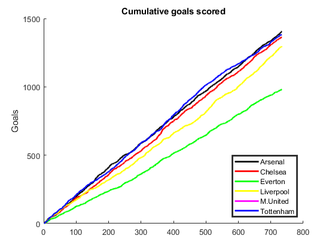
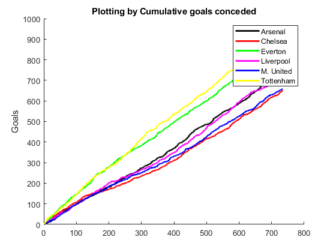
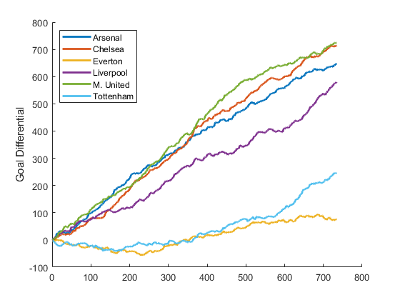

Contents
- Which game was the top scoring game?
- How many unique teams has played games ?
- Which team has scored the most goals?
- Conceded the most goals?
- Has the best goal differential (scored minus conceded)
- Has the best goal ratio (scored divided by conceded)?
- Which team has scored the most goals on average?
- Conceded the most goals on average?
- Do home teams have an advantage?
- How many games ended as 0:0 draw?
- In how many games one team has scored more than 3 goals?
- In how many games loosing team has scored more than 3 goals?
- Which teams have kept their place in the top division through out all seasons of this millennium ?
- Plotting by Cumulative goals scored.
- Plotting by Cumulative goals conceded
- Plotting by Cumulative goal differential.
- How would the last season’s final table change if we would use a different scoring method?
% This program answers the questions for Task4 in ETS2 % Author : Serhat Aydogdu % Task: 4 clear all; allData = dataset('xlsfile','england.csv'); % Selecting the games after the year of 2000 data = allData(159429:198816,1:12); data.division = str2double(data.division); data.home = string(data.home); data.visitor = string(data.visitor);
Which game was the top scoring game?
maxgoal = max(data.totgoal); % to see max total goals among all the games % max goal is 11 % determine the place of the game that has 11 goals total goalsTotal = maxgoal == data.totgoal; whichGame = find(goalsTotal,1,'first'); disp('Which game was the top scoring game?') fprintf('%s vs %s in %d', data.home(whichGame),data.visitor(whichGame), data.Season(whichGame)) data(whichGame,:);
Which game was the top scoring game? Burnley vs Watford in 2002
How many unique teams has played games ?
totalTeams = max(findgroups(data.home))% number of teams played; fprintf('%d teams played', totalTeams)
totalTeams = 111 111 teams played
Which team has scored the most goals?
data2 = data(:,{'home', 'hgoal'});
hgoal = data2.hgoal;
home = data2.home;
[G ,ID] = findgroups(home);
scoredGoal = splitapply(@sum, hgoal,G);
seekformax = max(scoredGoal) == scoredGoal;
teamID = find(seekformax, 1, 'first')
ID(teamID); % the Team scored most goals
fprintf('%s has scored the most goals', ID(teamID))
teamID =
5
Arsenal has scored the most goalsConceded the most goals?
vgoal = data.vgoal; [G2 ID2] = findgroups(home); concGoalbyTeam = splitapply(@sum, vgoal,G); whichTeam = max(concGoalbyTeam) == splitapply(@sum, vgoal,G); teamID2 = find(whichTeam,1,'first'); ID2(teamID2); % the team conceded the most goals fprintf('%s conceded the most goals', ID2(teamID2))
Crewe Alexandra conceded the most goals
Has the best goal differential (scored minus conceded)
goalDifferential = concGoalbyTeam - scoredGoal; whichTeam2 = max(goalDifferential) == goalDifferential; teamID3 = find(whichTeam2, 1, 'first'); ID(teamID3); fprintf('%s has the best goal differential',ID(teamID3))
Stockport County has the best goal differential
Has the best goal ratio (scored divided by conceded)?
goalRatio = scoredGoal / concGoalbyTeam; whichTeam3 = max(goalRatio) == goalRatio; teamID4 = find(whichTeam3, 1, 'first'); ID(teamID4); fprintf('%s has the best goal ratio',ID(teamID4))
AFC Bournemouth has the best goal ratio
Which team has scored the most goals on average?
avGoal = splitapply(@mean, hgoal,G); teamID5 = find(max(splitapply(@mean, hgoal,G)) == splitapply(@mean, hgoal,G),1,'first'); ID(teamID5); fprintf('%s has scored the most goals on average',ID(teamID5))
Arsenal has scored the most goals on average
Conceded the most goals on average?
avGoal2 = splitapply(@mean, vgoal,G); teamID6 = find(max(splitapply(@mean, vgoal,G)) == splitapply(@mean, vgoal,G),1,'first'); ID(teamID6); fprintf('%s has conceded the most goals on average',ID(teamID6))
Stockport County has conceded the most goals on average
Do home teams have an advantage?
for this question i will compare avarages of avarage goals
mean((splitapply(@mean, hgoal,G))) > mean((splitapply(@mean, vgoal,G))) disp('Avarage goals in home grater than in visit') % Home teams have an advantage...
ans = logical 1 Avarage goals in home grater than in visit
How many games ended as 0:0 draw?
zerozero = (hgoal == 0 & vgoal == 0); sum(zerozero); fprintf('%d games ended as 0:0 draw', sum(zerozero)) %3080 games ended as 0:0 draw...
3080 games ended as 0:0 draw
In how many games one team has scored more than 3 goals?
sum((hgoal > 3 & vgoal <= 3) | (hgoal<=3 & vgoal >3)); fprintf('In %d games one team has scored more than 3 goals', sum((hgoal > 3 & vgoal <= 3) | (hgoal<=3 & vgoal >3))) %3509 games
In 3509 games one team has scored more than 3 goals
In how many games loosing team has scored more than 3 goals?
sum((hgoal > vgoal) & (vgoal > 3) | (vgoal > hgoal) & (hgoal > 3)); %32 games fprintf('In %d games loosing team has scored more than 3 goals',sum((hgoal > vgoal) & (vgoal >3) | (vgoal > hgoal) & (hgoal > 3)))
In 32 games loosing team has scored more than 3 goals
Which teams have kept their place in the top division through out all seasons of this millennium ?
for this question, i found the intersection the teams in all season
data2017 = data(data.Season==2017 & data.division == 1,:); [G2017 ID2017] = findgroups(data2017.home); data2016 = data(data.Season==2016 & data.division == 1,:); [G2016 ID2016] = findgroups(data2016.home); data2015 = data(data.Season==2016 & data.division == 1,:); [G2015 ID2015] = findgroups(data2015.home); data2014 = data(data.Season==2014 & data.division == 1,:); [G2014 ID2014] = findgroups(data2014.home); data2013 = data(data.Season==2013 & data.division == 1,:); [G2013 ID2013] = findgroups(data2013.home); data2012 = data(data.Season==2012 & data.division == 1,:); [G2012 ID2012] = findgroups(data2012.home); data2011 = data(data.Season==2011 & data.division == 1,:); [G2011 ID2011] = findgroups(data2011.home); data2010 = data(data.Season==2010 & data.division == 1,:); [G2010 ID2010] = findgroups(data2010.home); data2009 = data(data.Season==2009 & data.division == 1,:); [G2009 ID2009] = findgroups(data2009.home); data2008 = data(data.Season==2008 & data.division == 1,:); [G2008 ID2008] = findgroups(data2008.home); data2007 = data(data.Season==2007 & data.division == 1,:); [G2007 ID2007] = findgroups(data2007.home); data2006 = data(data.Season==2006 & data.division == 1,:); [G2006 ID2006] = findgroups(data2006.home); data2005 = data(data.Season==2005 & data.division == 1,:); [G2005 ID2005] = findgroups(data2005.home); data2004 = data(data.Season==2004 & data.division == 1,:); [G2004 ID2004] = findgroups(data2004.home); data2003 = data(data.Season==2003 & data.division == 1,:); [G2003 ID2003] = findgroups(data2003.home); data2002 = data(data.Season==2002 & data.division == 1,:); [G2002 ID2002] = findgroups(data2002.home); data2001 = data(data.Season==2001 & data.division == 1,:); [G2001 ID2001] = findgroups(data2001.home); data2000 = data(data.Season==2000 & data.division == 1,:); [G2000 ID2000] = findgroups(data2000.home); a = intersect(intersect(ID2017,ID2016),intersect(ID2015,ID2014)); b = intersect(intersect(ID2013,ID2012),intersect(ID2011,ID2010)); c = intersect(intersect(ID2009,ID2008),intersect(ID2007,ID2006)); d = intersect(intersect(ID2005,ID2004),intersect(ID2003,ID2002)); ab = intersect(a,b); cd = intersect(c,d); e = intersect(ab,cd); f = intersect(ID2001,ID2000); g = intersect(e,f) disp('TEAMS THAT KEPT THEIR PLACE THROUGH OUT ALL SEASON IN THIS MILLENIUM') % 6 teams % {'Arsenal' } % {'Chelsea' } % {'Everton' } % {'Liverpool' } % {'Manchester United'} % {'Tottenham Hotspur'}
g =
6×1 string array
"Arsenal"
"Chelsea"
"Everton"
"Liverpool"
"Manchester United"
"Tottenham Hotspur"
TEAMS THAT KEPT THEIR PLACE THROUGH OUT ALL SEASON IN THIS MILLENIUM
Plotting by Cumulative goals scored.
ArsenalGoals = 0; ArsenalGoals2 = []; ArsenalData = data(data.home == 'Arsenal' | data.visitor == 'Arsenal',:); for i = 1:size(ArsenalData.hgoal) if ArsenalData.home(i) == 'Arsenal' ArsenalGoals = ArsenalGoals + ArsenalData.hgoal(i); elseif ArsenalData.visitor(i) == 'Arsenal' ArsenalGoals = ArsenalGoals + ArsenalData.vgoal(i); end ArsenalGoals2(i) = ArsenalGoals; end ChelseaGoals = 0; ChelseaGoals2 = []; ChelseaData = data(data.home == 'Chelsea' | data.visitor == 'Chelsea',:); for i = 1:size(ChelseaData.hgoal) if ChelseaData.home(i) == 'Chelsea' ChelseaGoals = ChelseaGoals + ChelseaData.hgoal(i); elseif ChelseaData.visitor(i) == 'Chelsea' ChelseaGoals = ChelseaGoals + ChelseaData.vgoal(i); end ChelseaGoals2(i) = ChelseaGoals; end EvertonGoals = 0; EvertonGoals2 = []; EvertonData = data(data.home == 'Everton' | data.visitor == 'Everton',:); for i = 1:size(EvertonData.hgoal) if EvertonData.home(i) == 'Everton' EvertonGoals = EvertonGoals + EvertonData.hgoal(i); elseif EvertonData.visitor(i) == 'Everton' EvertonGoals = EvertonGoals + EvertonData.vgoal(i); end EvertonGoals2(i) = EvertonGoals; end LiverpoolGoals = 0; LiverpoolGoals2 = []; LiverpoolData = data(data.home == 'Liverpool' | data.visitor == 'Liverpool',:); for i = 1:size(LiverpoolData.hgoal) if LiverpoolData.home(i) == 'Liverpool' LiverpoolGoals = LiverpoolGoals + LiverpoolData.hgoal(i); elseif LiverpoolData.visitor(i) == 'Liverpool' LiverpoolGoals = LiverpoolGoals + LiverpoolData.vgoal(i); end LiverpoolGoals2(i) = LiverpoolGoals; end MutdGoals = 0; MutdGoals2 = []; MutdData = data(data.home == 'Manchester United' | data.visitor == 'Manchester United',:); for i = 1:size(MutdData.hgoal) if MutdData.home(i) == 'Manchester United' MutdGoals = MutdGoals + MutdData.hgoal(i); elseif MutdData.visitor(i) == 'Manchester United' MutdGoals = MutdGoals + MutdData.vgoal(i); end MutdGoals2(i) = MutdGoals; end TottGoals = 0; TottGoals2 = []; TottData = data(data.home == 'Tottenham Hotspur' | data.visitor == 'Tottenham Hotspur',:); for i = 1:size(TottData.hgoal) if TottData.home(i) == 'Tottenham Hotspur' TottGoals = TottGoals + TottData.hgoal(i); elseif TottData.visitor(i) == 'Tottenham Hotspur' TottGoals = TottGoals + TottData.vgoal(i); end TottGoals2(i) = TottGoals; end figure(1) title('Cumulative goals scored') ylabel('Goals') hold on; plot(1:size(ArsenalData.hgoal), ArsenalGoals2,'k','LineWidth',2) plot(1:size(ChelseaData.hgoal), ChelseaGoals2,'r','LineWidth',2) plot(1:size(EvertonData.hgoal), EvertonGoals2,'g','LineWidth',2) plot(1:size(LiverpoolData.hgoal), LiverpoolGoals2,'y','LineWidth',2) plot(1:size(MutdData.hgoal), MutdGoals2,'m','LineWidth',2) plot(1:size(TottData.hgoal), MutdGoals2,'b','LineWidth',2) legend('Arsenal', 'Chelsea', 'Everton', 'Liverpool', 'M.United', 'Tottenham','LineWidth',2,'Location', 'SouthEast') hold off;
Plotting by Cumulative goals conceded
ArsenalGoalsConc = 0; ArsenalGoalsConc2 = []; for i = 1:size(ArsenalData.hgoal) if ArsenalData.home(i) == 'Arsenal' ArsenalGoalsConc = ArsenalGoalsConc + ArsenalData.vgoal(i); elseif ArsenalData.visitor(i) == 'Arsenal' ArsenalGoalsConc = ArsenalGoalsConc + ArsenalData.hgoal(i); end ArsenalGoalsConc2(i) = ArsenalGoalsConc; end ChelseaGoalsConc = 0; ChelseaGoalsConc2 = []; for i = 1:size(ChelseaData.hgoal) if ChelseaData.home(i) == 'Chelsea' ChelseaGoalsConc = ChelseaGoalsConc + ChelseaData.vgoal(i); elseif ChelseaData.visitor(i) == 'Chelsea' ChelseaGoalsConc = ChelseaGoalsConc + ChelseaData.hgoal(i); end ChelseaGoalsConc2(i) = ChelseaGoalsConc; end EvertonGoalsConc = 0; EvertonGoalsConc2 = []; for i = 1:size(EvertonData.hgoal) if EvertonData.home(i) == 'Everton' EvertonGoalsConc = EvertonGoalsConc + EvertonData.vgoal(i); elseif EvertonData.visitor(i) == 'Everton' EvertonGoalsConc = EvertonGoalsConc + EvertonData.hgoal(i); end EvertonGoalsConc2(i) = EvertonGoalsConc; end LiverpoolGoalsConc = 0; LiverpoolGoalsConc2 = []; for i = 1:size(LiverpoolData.hgoal) if LiverpoolData.home(i) == 'Liverpool' LiverpoolGoalsConc = LiverpoolGoalsConc + LiverpoolData.vgoal(i); elseif LiverpoolData.visitor(i) == 'Liverpool' LiverpoolGoalsConc = LiverpoolGoalsConc + LiverpoolData.hgoal(i); end LiverpoolGoalsConc2(i) = LiverpoolGoalsConc; end MutdGoalsConc = 0; MutdGoalsConc2 = []; for i = 1:size(MutdData.hgoal) if MutdData.home(i) == 'Manchester United' MutdGoalsConc = MutdGoalsConc + MutdData.vgoal(i); elseif MutdData.visitor(i) == 'Manchester United' MutdGoalsConc = MutdGoalsConc + MutdData.hgoal(i); end MutdGoalsConc2(i) = MutdGoalsConc; end TottGoalsConc = 0; TottGoalsConc2 = []; for i = 1:size(TottData.hgoal) if TottData.home(i) == 'Tottenham Hotspur' TottGoalsConc = TottGoalsConc + TottData.vgoal(i); elseif TottData.visitor(i) == 'Tottenham Hotspur' TottGoalsConc = TottGoalsConc + TottData.hgoal(i); end TottGoalsConc2(i) = TottGoalsConc; end figure(2) ylabel('Goals') title('Plotting by Cumulative goals conceded') hold on; plot(1:size(ArsenalData.hgoal), ArsenalGoalsConc2,'k','LineWidth',2) plot(1:size(ChelseaData.hgoal), ChelseaGoalsConc2,'r','LineWidth',2) plot(1:size(EvertonData.hgoal), EvertonGoalsConc2,'g','LineWidth',2) plot(1:size(LiverpoolData.hgoal), LiverpoolGoalsConc2,'m','LineWidth',2) plot(1:size(MutdData.hgoal), MutdGoalsConc2,'b','LineWidth',2) plot(1:size(TottData.hgoal), TottGoalsConc2,'y','LineWidth',2) legend('Arsenal', 'Chelsea', 'Everton', 'Liverpool', 'M. United', 'Tottenham') hold off;
Plotting by Cumulative goal differential.
ArsenalGdiff = ArsenalGoals2 - ArsenalGoalsConc2; ChelseaGdiff = ChelseaGoals2 - ChelseaGoalsConc2; EvertonGdiff = EvertonGoals2 - EvertonGoalsConc2; LiverpoolGdiff = LiverpoolGoals2 - LiverpoolGoalsConc2; MutdGdiff = MutdGoals2 - MutdGoalsConc2; TottGdiff = TottGoals2 - TottGoalsConc2; figure(3) ylabel('Goal Differential') hold on; plot(1:size(transpose(ArsenalGdiff)), ArsenalGdiff,'LineWidth',2) plot(1:size(transpose(ChelseaGdiff)), ChelseaGdiff,'LineWidth',2) plot(1:size(transpose(EvertonGdiff)), EvertonGdiff,'LineWidth',2) plot(1:size(transpose(LiverpoolGdiff)), LiverpoolGdiff,'LineWidth',2) plot(1:size(transpose(MutdGdiff)), MutdGdiff,'LineWidth',2) plot(1:size(transpose(TottGdiff)), TottGdiff,'LineWidth',2) legend('Arsenal', 'Chelsea', 'Everton', 'Liverpool', 'M. United', 'Tottenham','Location','NorthWest') hold off;
How would the last season’s final table change if we would use a different scoring method?
% ScoreTable in 2017 points = zeros(20,1); scoreTable = table(points,'RowNames', ID2017); for i = 1:size(data2017.home) if data2017.goaldif(i) > 0 scoreTable{data2017.home(i),'points'} = scoreTable{data2017.home(i),'points'} +3; elseif data2017.goaldif(i) == 0 scoreTable{data2017.home(i),'points'} = scoreTable{data2017.home(i),'points'} + 1; scoreTable{data2017.visitor(i),'points' } = scoreTable{data2017.visitor(i),'points' } + 1; elseif data2017.goaldif(i) < 0 scoreTable{data2017.visitor(i),'points'} = scoreTable{data2017.visitor(i),'points'} +3; end end disp('CURRENT SCORE TABLE') scoreTable = sortrows(scoreTable) % Current score Table % What if we change the scoring method ? points2 = zeros(20,1); scoreTableNew = table(points,'RowNames', ID2017); for i = 1:size(data2017.home) if data2017.goaldif(i) > 0 scoreTableNew{data2017.home(i),'points'} = scoreTableNew{data2017.home(i),'points'} + 10 + data2017.totgoal(i); scoreTableNew{data2017.visitor(i),'points'} = scoreTableNew{data2017.home(i),'points'} + 1 - data2017.totgoal(i); elseif data2017.goaldif(i) == 0 scoreTableNew{data2017.home(i),'points'} = scoreTableNew{data2017.home(i),'points'} + 3 + data2017.totgoal(i); scoreTableNew{data2017.visitor(i),'points' } = scoreTableNew{data2017.visitor(i),'points' } + 3 + data2017.totgoal(i); elseif data2017.goaldif(i) < 0 scoreTableNew{data2017.visitor(i),'points'} = scoreTableNew{data2017.visitor(i),'points'} + 10 + data2017.totgoal(i); scoreTableNew{data2017.home(i),'points'} = scoreTableNew{data2017.home(i),'points'} + 1 - data2017.totgoal(i); end end disp('NEW METHOD SCORE TABLE') scoreTableNew = sortrows(scoreTableNew)
CURRENT SCORE TABLE
scoreTable =
20×1 table
points
______
West Bromwich Albion 31
Stoke City 33
Swansea City 33
Southampton 36
Huddersfield Town 37
Brighton & Hove Albion 40
Watford 41
West Ham United 42
AFC Bournemouth 44
Crystal Palace 44
Newcastle United 44
Leicester City 47
Everton 49
Burnley 54
Arsenal 63
Chelsea 70
Liverpool 75
Tottenham Hotspur 77
Manchester United 81
Manchester City 100
NEW METHOD SCORE TABLE
scoreTableNew =
20×1 table
points
______
Huddersfield Town 332
Stoke City 344
Swansea City 354
Southampton 363
Everton 366
AFC Bournemouth 369
West Ham United 369
Burnley 372
Manchester United 384
Watford 384
Brighton & Hove Albion 388
Arsenal 390
Liverpool 391
West Bromwich Albion 397
Crystal Palace 398
Manchester City 406
Chelsea 420
Leicester City 420
Newcastle United 422
Tottenham Hotspur 428